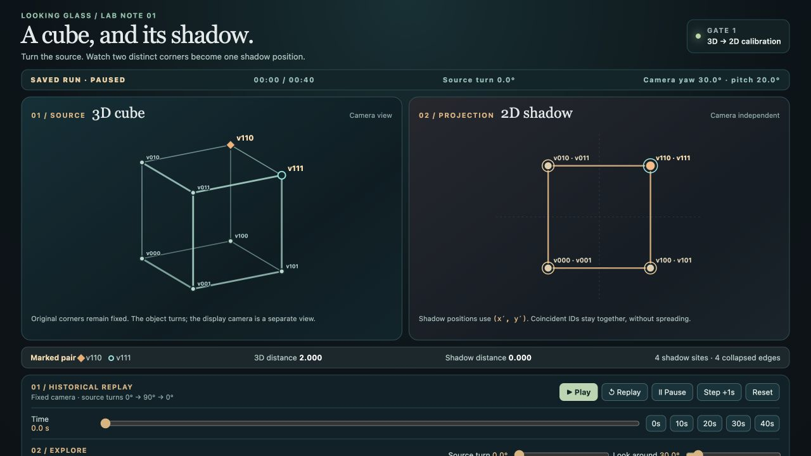
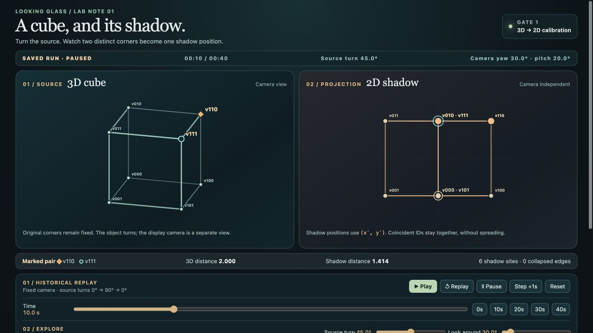
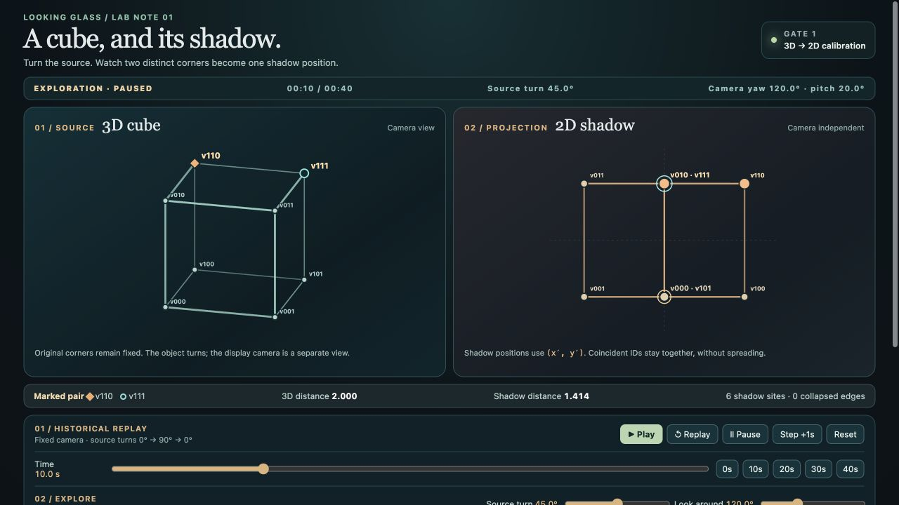
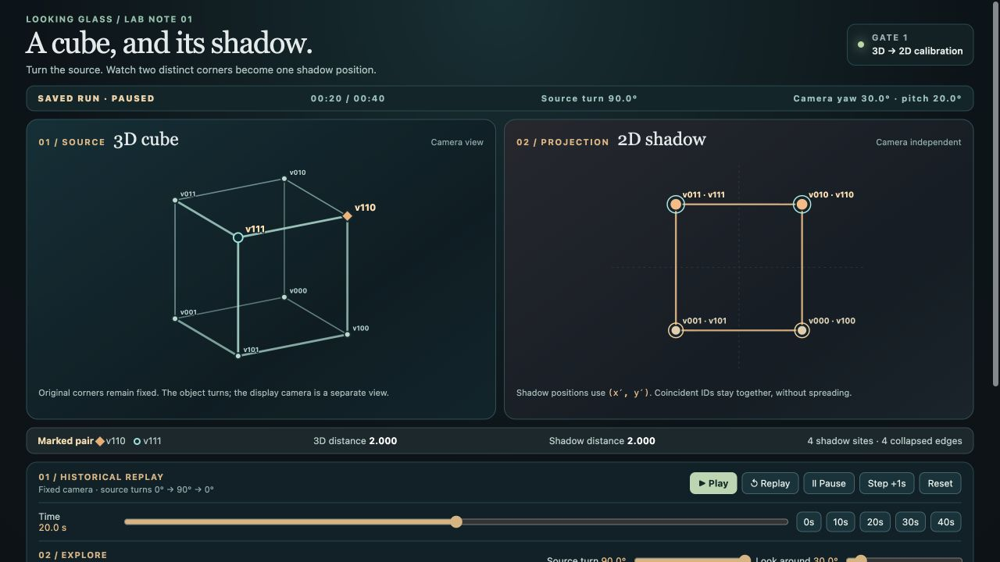

A cube, its shadow,
and a separate camera.
The known cube passed the mathematical and functional replay checks. Turning the source reveals a distinction hidden in its first shadow. Moving only the camera leaves that shadow unchanged.
Qualified result: one logging requirement remains unmet. The raw pause event does not distinguish automatic completion from a manual Pause. The separate browser trace supports this trial's automatic stop. Human understanding has not been tested.
Run G1-CUBE-003 · Build g1-9dce1c2b9c2b3be4
SVG from computed 3D points · 40-second source turn · Fixed camera yaw 30°, pitch 20° · Local preview on Paul's Mac
Watch this
- At 0 seconds, find diamond
v110and circlev111. They are two units apart in the source cube but share one shadow site. - Click Replay. At 10 seconds, their shadow distance is about 1.414; at 20 seconds, it is 2; at 40 seconds, they overlap again. The camera stays fixed.
- Restore 10 s, scroll to Look around, and move the camera. The left view changes while the right shadow stays fixed. Click 10 s again to restore the saved state. Source turn is a separate control.
- Scroll to Exact state & diagnostics for coordinates and edge identities, or the Run Library for the preserved Gate 0 replay.
Questions, predictions and evidence
| Question | Expected | Observed | Interpretation | Unresolved |
|---|---|---|---|---|
| T01 · Identity and distance | 8 vertices, 12 edges, 28 pairwise distances preserved | All five checkpoints agree | Model invariants passed | Other objects untested |
| T02 · Source and shadow | Pair separation 0 / √2 / 2 / √2 / 0 | Predicted coordinates agree within 2.22 × 10−16; tolerance 10−10 | This known rotation reveals the hidden distinction | No arbitrary screenshot reconstruction |
| T03 · Inverse and return | Algebraic inverse restores source; 40 s geometry equals 0 s | Independent inverse tests pass; geometry hashes match | Both checks passed | A returning movie alone would be insufficient |
| T04 · Camera-only change | Yaw 30° → 120° leaves shadow fixed | Geometry hash unchanged; source-view coordinates change | Camera isolation passed | Symmetric outlines can look similar |
| T05 · Manual source turn | Source 45° → 30° gives shadow distance 1, camera fixed | Distance 1; exploration labeled; exact restore | Independent control passed | Broader interaction usability untested |
| T06 · Controls and replay | Pause stable, 1 s steps, exact checkpoints and reload | Pause held 19.247 s; step advanced exactly 1 s; replay/reload matched | Mixed: functional pass, event-origin deviation | Raw pause event does not identify automatic/manual origin |
| T07 · History and viewing | Canonical bytes unchanged; G0 accessible; readable comparison | 16 Gate 1 files and 61 frozen G0 files preserved; original G0 link opened | Preservation and investigator visual check passed | Scrolling, small labels, other devices and human comprehension |
The independent audit checked 26 actual browser observations and seven original images. Playback was observed starting, running at 15.710 s, and completed at 40 s. No moving reverse-phase frame or video was captured; a separate 30 s checkpoint verifies the return state. The recorded item named full-replay-returning already shows 40 s, paused.
Four untouched, inspected captures
Click an image to open its full size. The geometry stays within both panes; grouped labels preserve coincident source IDs without jitter. Lower controls require scrolling.




Additional originals: 40 s return · reloaded 10 s · inspector. The capture index binds all seven to run, build, time and state.
{kind=link}
{kind=link}
{kind=link}
What changed, and what remains
001 failed before browser use because a camera-field typo produced NaN/null display coordinates. 002 corrected that and passed numeric checks, then pre-browser review found a missing historical G0 build label. 003 added the label and is the only browser-tested Gate 1 candidate. All three source snapshots and run fixtures remain preserved; the packet links them.
The preview uses port 43994 because 43993 already served an unrelated project. The tested build retains the pause-origin limitation rather than rewriting its history. Both deviations are recorded. The result supports this known-source calibration; it does not establish human comprehension, Hopf behavior, or 4D/5D geometry.
Evidence and exact recovery
Actual browser observations · Saved UI events · Preservation checks · Console observation scope · G0 commit recovery · Actual G0 library opening
Full source SHA-256: 9dce1c2b9c2b3be42e5597e0c666e499d7e0cd8d8ec05d9dac7ad66f72fb7c61
If the preview stops, restart its exact saved build with the preserved run directories alongside it:
node /Users/paul/BTC-Learning/experiments/looking-glass/calibration/builds/g1-9dce1c2b9c2b3be4/server.mjsNode v24.10.0 was used. No packages, lockfile or external assets are required. Open the paused replay; an already-running server needs no restart.
Decision: proposed Gate 2
Gate 2 would add linked ideal S² base points and sampled S³ Hopf fibers with mathematical checks, including chart and infinity cases. A separate candidate attention view would organize fictional records under two transparent reference questions, preserving identities, ambiguity, reversible changes and a plain listing. This would test a declared mapping, not establish a theory of human attention.
Do you approve Gate 2: Hopf correspondence and the shared reference, want revisions to Gate 1, or want to pause?
Gate 2 has not begun. Opening this page or using replay controls does not approve it.